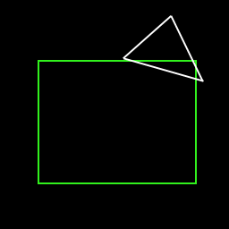

|
Quadtrees
Question submitted by (15 March 2000)

|
 |
|
 |
| |
I'm just getting into 3D graphics as a whole and I thought a good place to start
would be a world represented by a quad tree. I've read all the info I can find
on the Internet and set up the tree itself. The problem is that I can't figure
out a speed efficient routine that determines whether a particular square lies
(either completely or partially) inside the view triangle. All I've come up with
is a whole load of point-in-polygon tests and a mess of if statements and still
it doesn't work properly.
Am I missing something obvious?
|
|
 |
|
 |
 |
|
|
| |
Your question, in itself, is a bit confusing. I'm going to assume a few things.
First, that when you say "world" you're referring to a landscape or a terrain,
rather than an environment that has a lot of detail along the Y (height) axis.
Second, that when you wrote, "view triangle" you're referring to the view
frustum, as projected onto the ground.
As a side-note, I don't mean to insult you with these clarifications. Anybody
who has ever learned anything would know that, until you've learned something,
you're not always aware of all the variables involved in solving a problem.
Translated, this means that when asking questions about something you're in the
process of learning, you're not necessarily able to ask complete questions (i.e.
with all the variables listed.) That's my job, figuring out what you're trying
to accomplish, then helping you get there. Anyway, on to the solution!
Quadtrees are a great tool for terrain engines. Provided that your world is a
terrain, you're certainly headed in the right direction. Aside from the indirect
advantages, quadtrees provide two important things directly: a way to store your
data, and a hierarchy. It appears as though you've got your data into the
quadtree, now you just need to know how to take advantage of the hierarchy for
performance.
As far as I can tell, it's not possible to determine if a square (node) and a
[view] triangle intersect with just point-in-polygon tests. Consider the
following example:

Figure 1: A triangle intersects a square, with
none of the vertices of either inside the other
You'll notice that even if you were clever and tried a few extra points (the
center point of each) in this example, you would still find that the center
point of the square is outside the triangle, and the center of the triangle is
outside the square. How do you solve the problem? Clipping.
Clipping may sound like a lot of (slow) work, but hear me out. You need accurate
results and clipping can provide those results. Also, understand that you are
always clipping to the same three lines (your triangle). This means that you can
pre-calculate a few things to speed up your clipper by at least 25%. And finally
slowness incurred by clipping is far outweighed by the speed benefits you get
from the hierarchy of the quad-tree. Here's how:
Don't think of it as clipping a 'node' to a triangle, think of it as clipping a
'tree' to the triangle. Consider writing a routine that traverses your tree,
with the inputs: (1) a list of pointers and (2) a triangle. As you traverse your
tree, you want to determine if the current node (to start with, the root node)
intersects the triangle completely, partially, or not at all.
If a node intersects completely, then add the node to the list, and do not
recurse any deeper into this branch of the tree. The rule here is that if a node
is completely inside the triangle, then so will its children.
If the node doesn't intersect at all, then you don't add the node to the list,
and you also don't traverse any deeper along this branch.
If a node intersects partially, you need to do one of two things. You either
need to traverse deeper, or add the node to the list. If this is a leaf node
(i.e. no children) then you want to add it to the list. If this is a node (i.e.
it has children) then you don't need to add this node to the list, since it is
the children you're after, so just traverse deeper along this branch without
adding to the list. The intersecting children will eventually end up in the
list. This assumes that your nodes contain no data, and your leaves contain no
children.
When your traversal is complete, you've got a list of the nodes and/or leaves
that intersect the triangle. This means that to get all the data, you may have
to traverse into some of the nodes in the resulting list (the ones that aren't
leaves.)
Notice, that of those three tests, two of them are quick-outs ("quick-exits" or
"early terminators"). By this, I mean that two of the three tests will result in
no more traversing and no more clipping. Only the partial-intersection test
results in more clipping. And, this doesn't mean that a partial intersection
will result in constant clipping as the tree is traversed deeper. It just means
that there are potentially other nodes deeper along that branch that might or
might not intersect. Very possibly, there will be more quick-outs along that
branch of the tree, reducing the tree to fewer and fewer nodes of a "known
state". This is the beauty of the hierarchy.
And speaking of quick-outs, your clipper itself can have its own set of
quick-outs. Of course, this is another topic altogether.
If you're comfortable with your understanding of what I've described here, and
with your ability to code it, you should have all the key elements to make a
top-notch hierarchical frustum culling tool for a terrain system.
Response provided by Paul Nettle
|
|
|
|
|
This article was originally an entry in flipCode's Fountain of Knowledge, an open Question and Answer column that no longer exists.
|